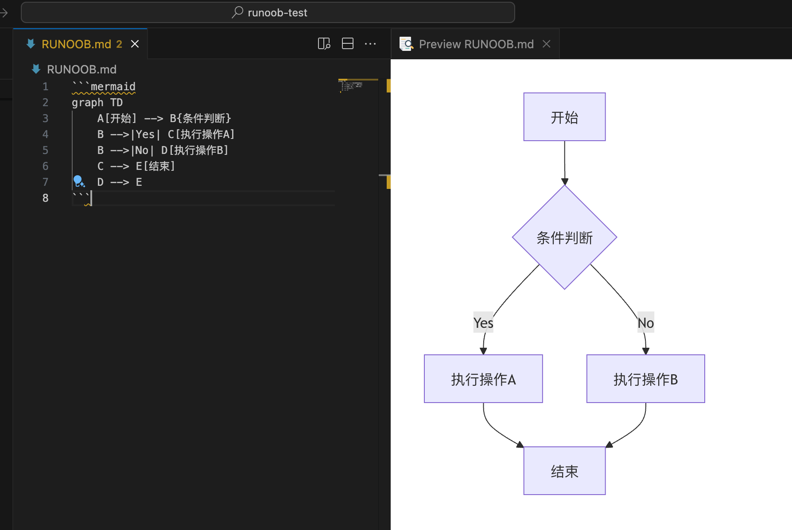
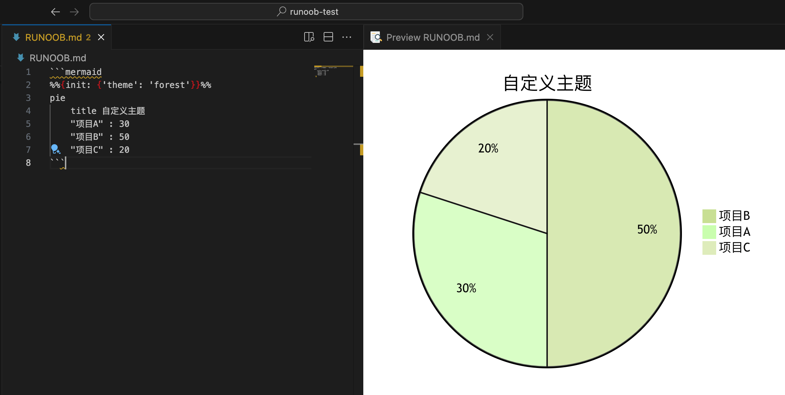
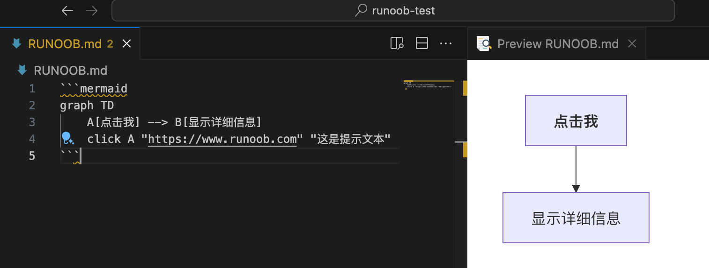

Markdown チャート描画
チャートは技術文書において非常に重要で、以下のことに役立ちます：
- 複雑なデータ関係の可視化
- システムアーキテクチャとワークフローの表示
- 考えや概念をより明確に表現すること
一般的な Markdown チャートツール
Mermaid
Mermaid は最も人気のある Markdown チャートツールの一つで、シンプルなテキスト構文を使用してさまざまなチャートを生成できます。
サポートされているチャートタイプ：
- フローチャート
- シーケンス図
- クラス図
- 状態図 (State Diagram)
- ガントチャート (Gantt Chart)
- 円グラフ (Pie Chart)
フローチャート
```mermaid
graph TD
A[开始] --> B{条件判断}
B -->|Yes| C[执行操作A]
B -->|No| D[执行操作B]
C --> E[结束]
D --> E
```

フローチャートの方向
TD或TB：上から下へBT：下から上へRL：右から左へLR：左から右へ
ノードの形状
A[方形]：長方形B(圆角矩形)：角丸長方形C{菱形}：ひし形（判定）D((圆形))：円形E>旗帜形]：旗形
接続線の種類
-->実線矢印-.->点線矢印==>太い実線矢印--実線-.点線
シーケンス図とガントチャート
シーケンス図（Sequence Diagram）
```mermaid
sequenceDiagram
participant A as 用户
participant B as 系统
participant C as 数据库
A->>B: 登录请求
B->>C: 验证用户信息
C-->>B: 返回验证结果
B-->>A: 登录成功/失败
```

シーケンス図の構文のポイント：
participant参加者の定義->>実線矢印-->>点線矢印note注釈の追加
ガントチャート（Gantt Chart）
```mermaid
gantt
title 项目开发计划
dateFormat YYYY-MM-DD
section 设计阶段
需求分析 :done, des1, 2024-01-01,2024-01-15
UI设计 :active, des2, 2024-01-10, 30d
section 开发阶段
前端开发 : dev1, after des2, 45d
后端开发 : dev2, 2024-02-01, 60d
section 测试阶段
单元测试 : test1, after dev1, 15d
集成测试 : test2, after dev2, 10d
```

ガントチャートの構文のポイント：
titleタイトルの設定dateFormat日付形式の定義sectionフェーズの定義- タスクの状態：
done（完了）、active（進行中）、crit（クリティカル）
円グラフ
```mermaid
pie
title 浏览器市场份额
"Chrome" : 65
"Safari" : 15
"Firefox" : 10
"其他" : 10
```

チャートタイプの詳細
フローチャート (Flowchart)
フローチャートは最もよく使用されるチャートタイプで、プロセスやアルゴリズムの流れを表示するために使用されます。
Mermaid の例：
```mermaid
graph LR
A[开始] --> B{条件判断}
B -->|是| C[执行操作1]
B -->|否| D[执行操作2]
C --> E[结束]
D --> E
```
構文の説明：
graphフローチャートの宣言LR左から右へのレイアウトを表します（オプション: TB/RL/BT）-->矢印での接続を表します[]長方形ノードを表します{}ひし形の条件ノードを表します
シーケンス図 (Sequence Diagram)
シーケンス図はオブジェクト間の相互作用の順序を示します。
Mermaid の例：
```mermaid
sequenceDiagram
participant 用户
participant 系统
用户->>系统: 登录请求
系统-->>用户: 验证请求
用户->>系统: 提交凭证
系统-->>用户: 登录成功
```
構文の説明：
participant参加者の定義->>実線矢印を表します-->>点線矢印を表します
クラス図 (Class Diagram)
クラス図はオブジェクト指向設計に使用され、クラスとその関係を示します。
```mermaid
classDiagram
class 用户 {
+用户名: string
+密码: string
+登录()
}
class 订单 {
+订单号: int
+创建日期: date
+计算总价()
}
用户 "1" --> "n" 订单
```
上級テクニック
1. テーマのカスタマイズ
Mermaid ではチャートのスタイルをカスタマイズできます：
```mermaid
%%{init: {'theme': 'forest'}}%%
pie
title 自定义主题
"项目A" : 30
"项目B" : 50
"项目C" : 20
```
2. インタラクティブなチャート
一部のツールはインタラクティブ機能の追加をサポートしています：
```mermaid
graph TD
A[点击我] --> B[显示详细信息]
click A "https://www.runoob.com" "这是提示文本"
```

3. チャートのエクスポート
ほとんどのツールはチャートを以下の形式でエクスポートできます：
- PNG 画像
- SVG ベクター画像
- PDF ドキュメント
ツールのサポート状況
| ツール/プラットフォーム | Mermaid | PlantUML | Graphviz |
|---|---|---|---|
| GitHub | ✔ | ✖ | ✖ |
| GitLab | ✔ | ✔ | ✔ |
| VS Code | プラグイン | プラグイン | プラグイン |
| Typora | ✔ | ✖ | ✖ |
| Obsidian | プラグイン | プラグイン | プラグイン |
ベストプラクティス
- シンプルに保つ：チャートは簡潔明瞭にし、詳細を入れすぎないようにする
- スタイルを統一する：同じドキュメント内のチャートは一貫したスタイルを保つようにする
- 説明を追加する：複雑なチャートにはテキストによる説明を追加する
- バージョン管理：テキスト形式のチャートは Git とよく連携する
- レンダリングをテストする：異なるプラットフォームでチャートの表示をテストする
よくある質問
Q1: チャートが表示されないのはなぜですか？
- 正しい構文を使用しているか確認する
- 使用している Markdown エディタ/プラットフォームがそのチャートツールをサポートしているか確認する
- 構文エラーがないか確認する
Q2: これらのチャート構文を学ぶにはどうすればいいですか？
- 公式ドキュメントを参照してください：
- オンラインエディタを使用してリアルタイムで練習する
Q3: ビジュアルエディタはありますか？
- Mermaid Live Editor: https://mermaid.live
- PlantUML Server: http://www.plantuml.com/plantuml
クリックしてノートを共有
<p style="font-size:14px;">ノートはこの記事の内容を拡張したものである必要があります！</p><br> <p style="font-size:12px;"><a href="../tougao.html" target="_blank">記事の投稿は、ここをクリック</a></p> <p style="font-size:14px;"><a href="../w3cnote/runoob-user-test-intro.html" target="_blank">登録招待コードの取得方法</a></p> <h3 class="text-muted"><i class="fa fa-info-circle" aria-hidden="true"></i> ノートを共有する前に<a href=";.html" class="runoob-pop">ログイン</a>が必要です！</h3> <p><a href="../w3cnote/runoob-user-test-intro.html" target="_blank">登録招待コードの取得方法</a></p>